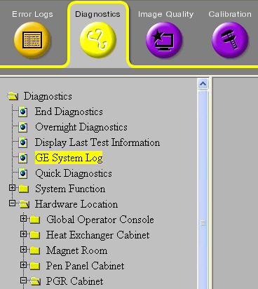
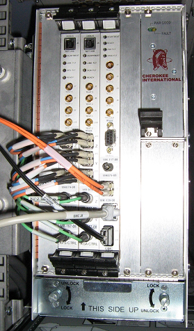
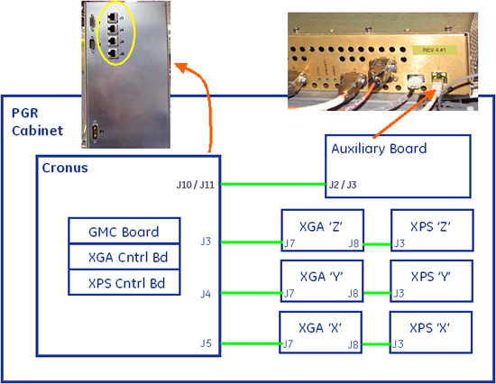
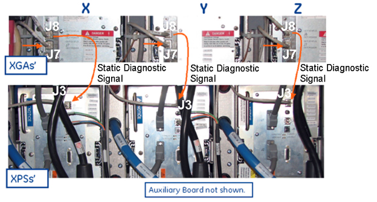

Proprietary to General Electric Company
Direction 5670006, Rev# 1
Discovery MR750w GEM Service Methods
Module Version 9.0, Version Date 9/22/10
Proprietary to General Electric Company |
| ||||
| If any gradient cables are swapped between different axis or polarities for troubleshooting, perform DQA-II procedure to verify that the gradient cables are returned to their original position. | ||||
| NOTE: | For the Gradient Block Diagram, select the Gradient option in the Interactive Block Diagrams document. For the Gradient Output Cable diagram, see Illustration 13. |
Gradient Diagnostics offers three tests that should all be run: Gradient Hammer, Gradient Fidelity, and Gradient Static. To locate the tests on the Customer Service Desktop, navigate to:
Diagnostics → System Function → Gradient → Gradient Diagnostics
Diagnostics → Hardware Location → PGR Cabinet → Gradient → Gradient Diagnostics
Accept all defaults on the Gradient Diagnostics screen and click the [Run] button shown below.
| NOTE: | Accepting all defaults means do not clear any Test Selection checkboxes or make any changes to the Test Length from Short (default) to Long. |
For more information on each test, see Gradient Hammer, Gradient Fidelity, or Gradient Static.
Illustration 1: Gradient Diagnostics Screen

If the system returns failures after running the three Gradient tests, do any of the following:
Access the GE System Log and find the results from the test.
Illustration 2: GE System Log

Illustration 3: GE Service Log, Extended Messages

In the third column, locate extended log messages that appear as links and click the desired link.
Illustration 4: Sample Extended Message

Read the Extended Message and perform the recommended action to assist in solving the error.
Octavius Link will help in the debug of XGA/XPS/AUX fiber links. Proceed to the next section for more information.
ST Fiber: Same fiber used for X, Y, and Z gradient lines as in previous EXCITE based products. (See the illustration below.)
Illustration 5: Clock Synchronization Data Fibers

Clock Synchronization Data Fibers are not axis specific. Can swap them between connectors on eXtreme Gradient Amplifier (XGA) and eXtreme Power Supply (XPS) control boards and system does not care. (See the illustration below.)
Illustration 6: Cronus XPS, XGA, and GMC Control Boards

The Auxiliary Board Fiber Link is show in the illustration below.
Illustration 7: Auxiliary Board Fiber Link

Octavius Link provides three static diagnostic signals to the GMC that act as back up in case the main fiber link J2/J3 is damaged or disconnected. As shown below, cables in green are Octavius links. While the system posts an error concerning any component with a faulty Octavius Link connection, it will not pause scanning. The Octavius link is not to be confused as an Ethernet connection, even though it is an RJ-45 cable connection.
Illustration 8: Octavius Link - Auxiliary Board Through XGA and XPS

Illustration 9: Octavius Link - Between XGA and XPS

Before swapping cables, perform LOTO for the PGR PDU/Gradient Subsystem
Be aware that swapping gradient data fibers will apply Eddy Current Compensation (ECC) to the wrong coil axis, which could potentially result in SPT Eddy Current failures or even Gradient Current distortion faults. It may be necessary to disable ECC in these cases.
| NOTE: | ECC can be disabled by performing the following:
|
Perform a TPS Reset after swapping any two gradient data fiber cables.
Illustration 10: X, Y, and Z Gradient Data Flow

To help solve image problems, try using some of the following recommended hardware solutions:
Swap output cables from Cronus XGA control board (J11/J14, J12/J15, J13/J16).
Swap input cables at the XGA amplifiers J1/J2 between axis.
Swap amplifiers and power supplies (outers to inners, x to y, and y to z), all shown below.
Illustration 11: Sample of Y and Z Swap

Swap outputs at the Bus Bar or at top of PGR Cabinet shown below.
Illustration 12: Top of Gradient Cabinet

The Illustration above depicts X, Y, and Z at the top of the Gradient Cabinet to swap positions if necessary. Swapping gradient output cables will apply ECC to the wrong coil axis, which could potentially result in SPT Eddy Current failures or even Gradient Current distortion faults. It may be necessary to disable ECC in these cases.
| NOTE: | Do not swap output cabling at the XGA terminal lugs, nor swap LEMs between XGAs . |
The gradient output cables run between the PGR Cabinet through the PEN Panel to the Gradient Bus Bar as shown below.
Illustration 13: Gradient Output Cable Diagram

There are three identical sets of components to operate the X, Y, and Z functions within the Gradient Cabinet. These components can be swapped to aid in the troubleshooting process.
This type of error indicates that the over slew-rate bit (ovrSR) was set during the start of the scan.
Table 1: Gradient Messages Error Log - Over Slew-rate Example
| For This error: | Conditions and Potential Issue: | |
| 1 | 2267827 - XGD hardware warning detected. | The ovrSR bit in the DSP_FAULT register was detected on the
XGD XGA-CB board X, Y, or Z-axis during start of a scan or diag. In some of the scans gradient + ECC, compensation will exceed the slew-rate limit and DSP firmware will detect and report a warning. As long as the hardware is properly functioning, this will be logged to the system (messages above), but system scanning will not be inhibited or affected. Run one or more passes of Gradient Fidelity Diagnostic to confirm proper operation of the gradient hardware. If this diagnostic passes, these can be classified as nuisance messages. |
This type of error for every gradient axis is seen at the same time in the error log.
Table 2: Gradient Messages Error Log - Multiple Gradient Axis Examples
| For This error: | Conditions and Potential Issue: | |
| 1 | 2267798 - Safe mode startup of the XGD (XGA-SB X axis) failed. |
|
| 2 | 2267801 - Safe mode startup of the XGD (XGA-SB Y axis) failed. | |
| 3 | 2267804 - Safe mode startup of the XGD (XGA-SB Z axis) failed. | |
| 4 | 2267807 - Safe mode startup of the XGD (XPS-SB X axis) failed. | |
| 5 | 2267810 - Safe mode startup of the XGD (XPS-SB Y axis) failed. | |
| 6 | 2267813 - Safe mode startup of the XPGD (XPS-SB Z axis) failed. |
This type of error is seen in the error log and only reported for a single gradient axis.
Table 3: Gradient Messages Error Log - Single Gradient Axis Examples
| For This error: | Conditions and Potential Issue: | |
| 1 | 2267807 - Safe mode startup of the XGD (XPS-SB X axis) failed. | Check EMO reset and perform a TPS reset.
If this error occurs again, contact your service representative.
|
| 2 | 2267810 - Safe mode startup of the XGD (XPS-SB Y axis) failed. | |
| 3 | 2267813 - Safe mode startup of the XGD (XPS-SB Z axis) failed. |
The system intermittently stops and the only way to recover is by rebooting the system. This type of error is seen in the log when an interruption occurs.
Table 4: Gradient Messages Error Log - System Intermittently Stop Examples
| For this error: | Conditions and Potential Issue: | |||
| 1 | 2267943 - Z axis XGA is reporting a power off fault. | Check EMO reset and perform a TPS reset.
If this error occurs again, contact your service representative.
| ||
| 2 | 2267944 - Z axis XPS is reporting a power off fault. | |||
| 3 | 2267945 - Y axis XGA is reporting a power off fault. | |||
| 4 | 2267946 - Y axis XPS is reporting a power off fault. | |||
| 5 | 2267947 - X axis XGA is reporting a power off fault. | |||
| 6 | 2267948 - X axis XPS is reporting a power off fault. | |||
| 7 | 2267857 1 - A gradient distortion fault occurred on the X axis. | Error indicates that small signal input to XGA does not match
large signal output by XGA. Look for other errors prior to this one that occur at about the same time, which might explain why this error occurred. There are many reasons this error would appear alone in the error log. In order of most to least probable, reasons include:
|
Table 5: Gradient Messages Error Log - Initial Message Examples
| For This error: | Conditions and Potential Issue: | |||||||||
| 1 | 2267833 - XGD reports no 420 V power. |
| ||||||||
| 2 | 2267962 - X axis XGA-SB is reporting a PLL failure. |
| ||||||||
| 3 | 2267885 - Y axis XPS is reporting a PLL Warning |
|
This type of error message will state either undervoltage or overvoltage, but not both at same time.
Table 6: Gradient Fidelity Diagnostic Error - Message Example
| For this error: | Conditions and Potential Issue: | |
| 1 | 2267910 - Power Cabinet AUX Board is reporting a 48 V undervoltage/ overvoltage. | This error indicates that the Auxiliary Module is measuring an out-of-tolerance change of 48 V (48 V, ±4%) during the diagnostic. This may indicate a malfunction of the PDU PS1 supply. A measurement failure in the Auxiliary Module (much less likely) could also cause this error. |
When the XPS-SB is hung up in Safe Mode with the Host failing, this type of error message may display.
Table 7: System Stuck - Safe Mode Error Example
| For This error: | Conditions and Potential Issue: | |
| 1 | 2267809 - Application mode startup of the XGD (XPS-SB X axis) failed. | Recover by cycling power for the XPS, or simply unplugging and plugging fiber-optic cable into the SFP fiber-optic transceiver. In theory, this could happen on the XGA as well, but uncommon. |
| 2267812 - Application mode startup of the XGD (XPS-SB Y axis) failed. | ||
| 2267815 - Application mode startup of the XGD (XPS-SB Z axis) failed. |
Table 8: Grafidy3 Conditional Error- Example
| For This condition: | Follow These Steps: | |
| 1 | Grafidy3 will not converge on all axes; where it converged, it did so on two iterations. |
|
This type of error is reported in the log, but does not inhibit scanning.
Table 9: System Running - Temperature Error Example
| For This error: | Conditions and Potential Issue: | |||
| 1 | 2267873 - Y axis XGA-SB is reporting a TEC out of temperature range fault. TEC temperature is 124C. | A Thermo-Electric Device (TEC) is present on the internal system board of the XGA to control the temperature stability of critical compensation circuits. The TEC can become dislodged or malfunction causing this error. The TEC can only compensate (by adding heat) within a certain temperature range of the XGA coldplate. Confirm that the PE cooling loop of the Heat Exchange Cabinet is stable and operating in the specified range (30 to 35°C).
|
Extended error report recommends swapping the pair of black power cables between Z XPS and neighboring Y XGA and Z XGA and neighboring Y XPS. Early sites do not have black power cables long enough to swap. May need to physically swap the XPS modules and repeat experiment. FMI 60769X provides longer length power cables to these early sites.
Table 10: Unable to Scan Error - High Voltage Example
| For This error: | Conditions and Potential Issue: | |||||
| 1 | 2267889 - Z axis XPS is reporting a high voltage I-Bus over current fault. |
|
| For This error: | Conditions and Potential Issue: | |
|---|---|---|
| 1 | 2267728 (first in error log) - Unexpected communication loss with XGD; perform TPS Reset and try again. |
|
| ||||
| If any gradient cables are swapped between different axis or polarities for troubleshooting, perform the DQA-II procedure to verify that the gradient cables are returned to their original position. | ||||
Verify all system interconnects are returned to normal configurations.
Run the DQA II Tool and verify that the image orientation is correct.